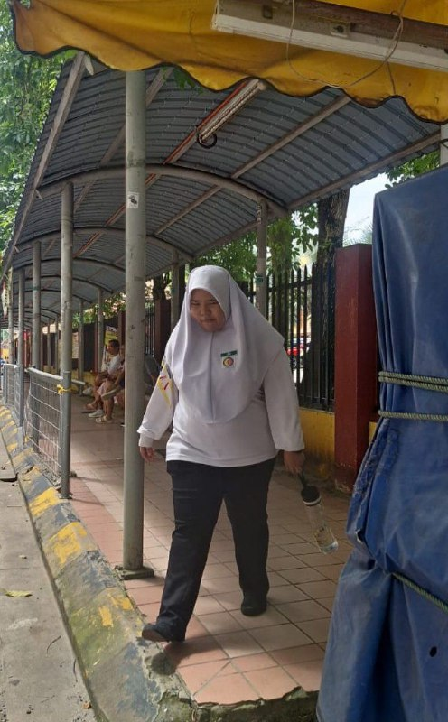
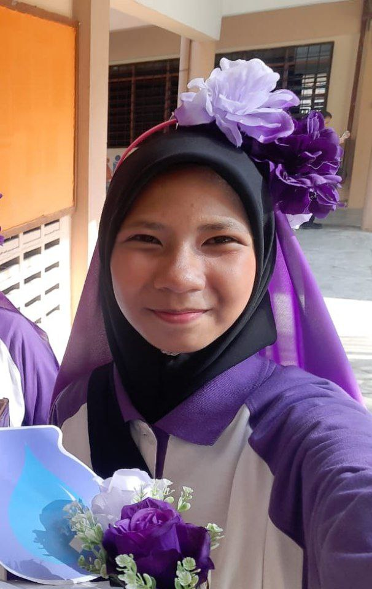
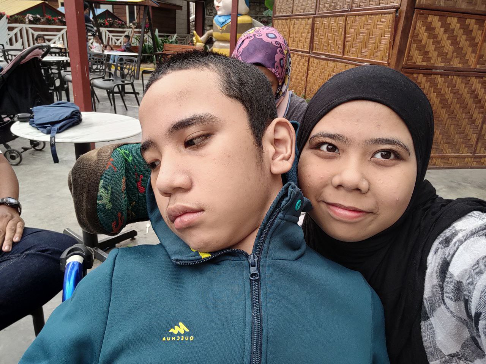

Siblings
MY SIBLINGS
Spending Time With My Siblings Brings Me Happiness
I am the oldest sister. I have two younger sisters and the youngest small brother among my siblings.

The second child in the family is named Putri Nur Laily Binti Adie Putra, and she goes by "Lily" online. Her birthdate is January 18, 2007. She is currently 17 years old and getting ready for the SPM (Sijil Pelajaran Malaysia) exam in January of next year.
Permit me to convey a tiny bit of my sister's personality. I will concede that Lily is quite intelligent; but, in my opinion, Lily is smarter than me, even though older siblings are typically thought to be the most intelligent. I'm not envious of her, and I sincerely hope that she pursues further education and employment in order to have a successful future. From kindergarten through high school, she always received academic awards and achieved good test results.
Lily can occasionally be silent, melancholy, and sensitive. She can be really frightening when she is displaying her sensitive side. However, she only acts that way when she is exhausted from school.
Our family only sent Lily and me to Chinese school, which is a fun truth. There are just two of us who speak and comprehend Chinese well.
My father took this photo when he was picking daughter Lily from school.

"Ayesha" is my family's third daughter. Putri Nur Ayesha Binti Adie Putra is her complete name. She was born on June 15, 2010, and as of right now, she is 14 years old.She took this photo during one of her school's ceremonies. where she needs to get ready for her team's meeting.
To be honest, it's difficult to characterise her because she's such an erratic person. She mentioned having a YouTube channel, for instance, out of the blue. None of the members in our family have a YouTube channel because we all find it useless and don't use it. Ayesha, however, has distinct tastes in everything.One simple method she expresses her affection for social media is that she is making a video in which she records herself speaking in front of the camera. Only my dad and Ayesha are quite active on social media in our family, and they update their status whenever they have something amusing to share.
My parents have never discouraged Ayesha from making YouTube videos because they help her in ways like improving her fluency in English. Moreover, I'm not sure if she enjoys studying or if this is just "Gen Z" things. I've heard that students in this generation don't really enjoy going to school or starting a profession. They aspire to be influencers and Youtbers, and I sincerely hope that my sister is not one of them as my parents want the best academic results for their kids.
Compared to Lily and me, Ayesha is far more creative in the arts. Somehow, she is constantly coming up with new projects since she enjoys watching "Do It Yourself (DIY)" videos on YouTube.

My youngest brother, "Adam," was born on July 20, 2013, and he is currently 11 years old and growing into a strong, healthy child. His full name is Adam Qusairy Bin Adie Putra.
We recently travelled on vacation to Cameron Highlands, as seen in this picture. As you can see from the photo, when I take a selfie with my brother, he is in a wheelchair and does not look at the camera.
Adam was originally born as a normal boy, but in 2017, he developed asthma all of a sudden and ended up in the hospital. Subsequently, Adam experiences a circumstance in which he stops breathing for three to five seconds without oxygen reaching his brain. With the assistance of hospital gas and doctors, he awakens once more. We've all learned that even though we briefly lost him, Allah SWT offers us another chance to be with Adam. However, Adam is no longer the same as he was in the past; among other things, he is unable to stand, speak, or even wake up.
Adam has brittle asthma and "Hypoxic-ischemic encephalopathy (HIE)". An example of brain injury is hypoxic-ischemic encephalopathy (HIE). This condition impacts the central nervous system and is brought on by a deficiency of oxygen reaching the brain either before or soon after birth.
After what happened to Adam, my family has to take care of him completely, which includes giving him milk, baths, and many other things. To be honest, it's difficult for us to accept this, but we must support one another since Adam is still giving us a chance to live. My family genuinely loves Adam, and we will always be there for him in any way. We also never saw Adam's care as a burden on the family; rather, we saw it as a challenge that Allah SWT had given us, to take care of this "child of heaven."